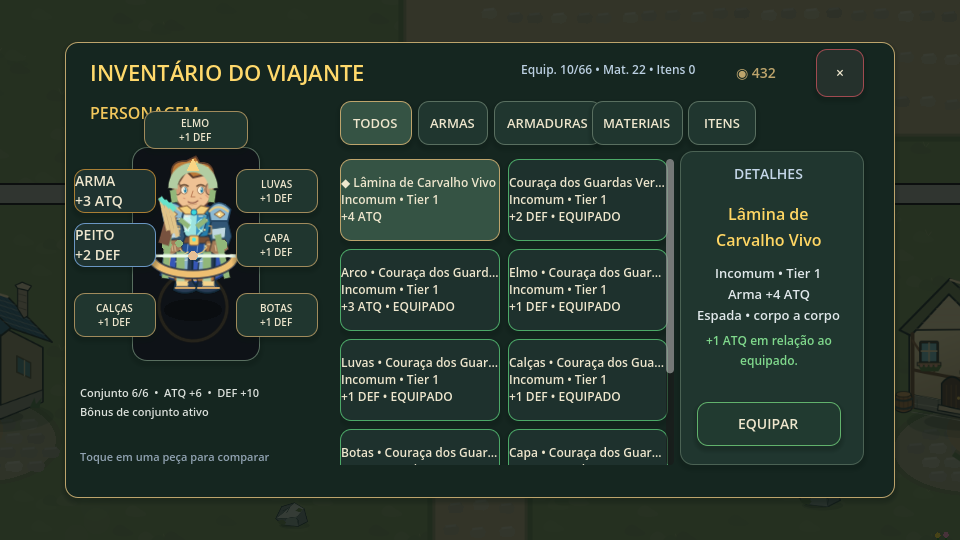
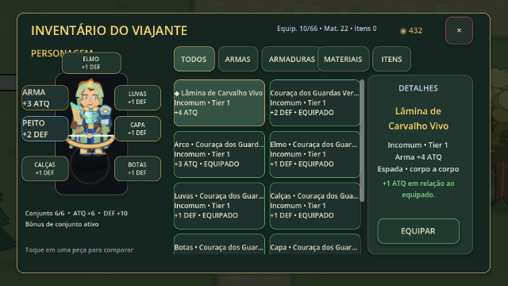
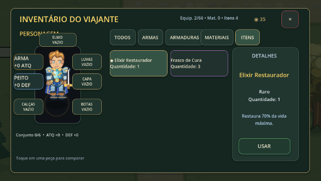
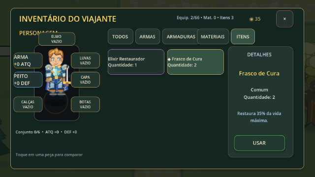
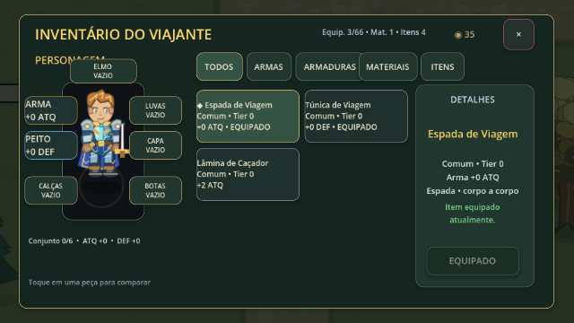
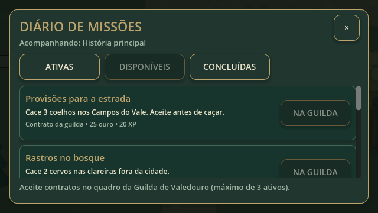
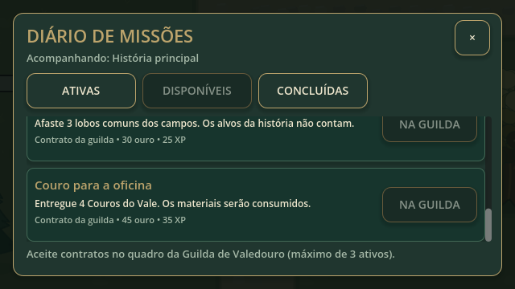
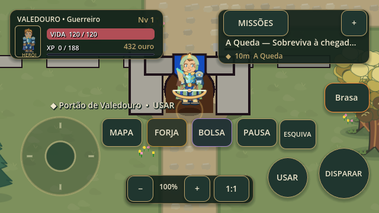
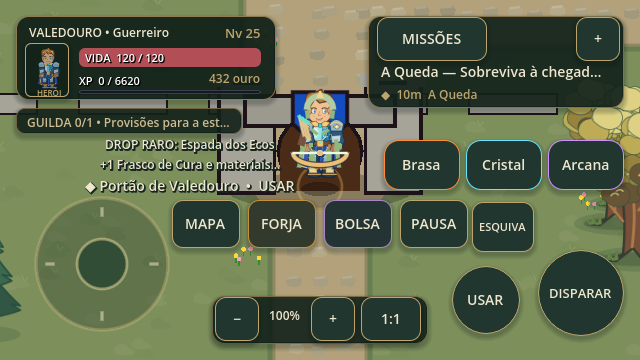
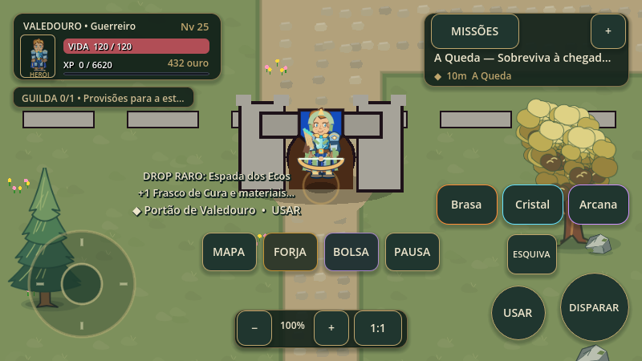

Retomada do commit f69405c do GitHub. Capturas reais do Godot 4.6.3; 34 testes Cartoon locais passaram. Bolsa com personagem, consumíveis, loot, missões roláveis e desbloqueio de magias em 1/10/25. Avisos de combate reposicionados e limitados a duas linhas. Sem APK nesta retomada.
As cenas de QA usam progresso controlado para exibir equipamento e níveis. Aprovação visual e desempenho em aparelho físico continuam pendentes.









